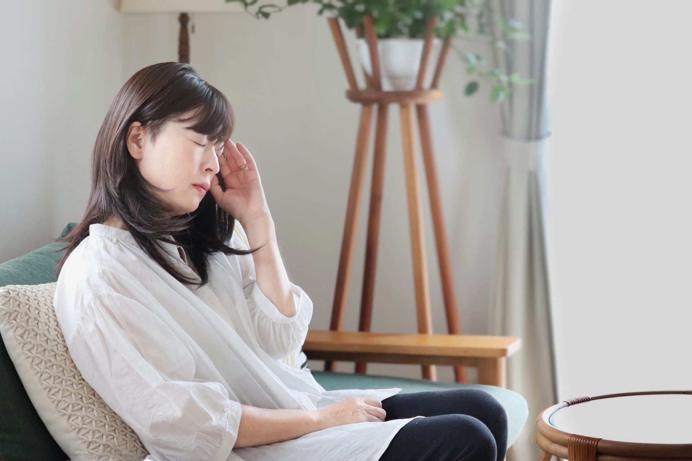

ご予約・お問い合わせ
当院は完全予約制です。
お電話またはWEBからご予約ください。

こんなお悩みありませんか？
-
パソコンやスマートフォンの画面が
まぶしい -
LED照明や蛍光灯で頭痛、めまい、
吐き気が起こる -
音を聞き続けると、耳や体が
疲れてしまう - サングラスやイヤーマフが手放せない
-
光や音の影響で、仕事や日常生活に
支障が出ている -
眼科や耳鼻科などで検査を受けても、
原因が分からなかった
このような光や音による不調を、
症状と生活環境の両面から
整理します。
感覚のつらさを、
丁寧にひもとくクリニック
光と音のクリニックは、光過敏や音過敏などの感覚症状を対象とする、御茶ノ水の完全予約制クリニックです。
一般的な検査では数値化しにくい不調に対し、原因不明の痛みや苦痛を扱うペインクリニックの知見を応用。
症状だけでなく、パソコン、照明、職場、自宅などの環境についても詳しく伺い、負担を軽減するための対策を一緒に考えます。
診療について
保険診療では十分な対応が難しい光や音の環境調整までを対象とした自由診療を提供しています。
症状だけでなく、生活環境も含めて丁寧に確認し、一人ひとりに合わせた対策をご提案いたします。
※ 眼科や耳鼻科等をまだ受診されていない方は、重大な疾患を見落とさないためにも、まずは各専門医での検査をおすすめしております。
SERVICES
診療内容
眼科や耳鼻科などの専門的な検査で明確な異常が見つからない場合や、治療を受けても続く感覚過敏、痛み、自律神経の不調について診療を行っています。
麻酔科・ペインクリニックの知見をもとに、症状だけでなく、生活や仕事で接する光・音などの環境まで丁寧に確認。一人ひとりの状態や生活背景に合わせて、負担を軽減するための環境調整を含めた対策を検討します。
視覚過敏・光過敏
照明や日差し、パソコン・スマートフォンの画面などによって生じる、まぶしさ、目の疲れや痛み、不快感についてご相談いただけます。
頭痛、めまい、吐き気、首や肩の不快感などを伴う場合も含め、身体の状態と光環境の両面から確認します。必要に応じて、照明やディスプレイ、自宅・職場の光環境を整えるための対策をご提案します。
聴覚過敏・音過敏
日常の音を強く不快に感じる、特定の音が響く、音を聞くと疲れるといった症状を対象としています。
耳鳴りや耳がふさがったような感覚なども含め、症状が現れる場面や周囲の音環境について丁寧に伺います。
触覚過敏・皮膚過敏
衣服や物が触れた際のチクチク感、ヒリヒリ感、圧迫感、不意に触れられることへの苦手意識など、皮膚感覚に関する過敏症状をご相談いただけます。
塗布するものや皮膚に浸透する感覚が苦手な方も、症状や生活への影響を整理しながら診療します。
感覚刺激に伴う
自律神経の不調
光や音などの刺激に伴って現れる、頭痛、吐き気、めまい、動悸、発汗、首や肩の不快感などについて診療します。
麻酔科・ペインクリニックの考え方を応用し、刺激による身体的・精神的な負担と、自律神経の反応を多角的に確認します。
生活・職場環境の
確認と調整
症状が現れる時間や場所に加え、照明、パソコン画面、音、自宅や職場の設備なども確認します。
不快な刺激を減らし、日常生活や仕事を続けやすくするため、身体への助言だけでなく、光・音環境の調整も含めて検討します。
受診前にご確認ください
光や音への過敏症状は、眼や耳の病気、神経系の疾患などによって生じる場合があります。まずは眼科や耳鼻科、神経内科などを受診し、器質的な疾患の有無を確認することが推奨されています。
FEATURES
4つの特徴光・音のつらさに
特化した診療
パソコンやスマートフォンの画面、LED照明、日常の音などによって生じる、まぶしさや頭痛、めまい、耳の疲れなどをご相談いただけます。一般的な検査で原因が分からなかった症状にも、丁寧な問診を通して向き合います。
症状と生活環境の
両面から確認
身体の状態だけでなく、職場のパソコン環境や照明、自宅で接する光や音なども詳しく確認します。一人ひとりの生活や働き方に合わせ、負担を減らすための環境対策をご提案します。
症状に配慮した
受診環境
診察室は暗室や調光に対応し、光への刺激がつらい方にも配慮しています。外出が難しい方や遠方にお住まいの方に向けて、オンライン診療にも対応しています。
NPO法人と連携した
継続サポート
「NPO法人 目と心の健康相談室」と連携し、診療だけでは解決しにくい生活上の悩みや不安にも寄り添います。光や音による症状を抱える方が、日常生活を送りやすくなるよう継続的な支援につなげています。
PRICE
料金のご案内※当院はすべて自由診療であり、
健康保険は適用されません。
診察50分（初診を含む）
光や音によるつらさについて、
症状が現れる場面やこれまでの経過、生活環境などを丁寧に伺います。
初診で行う主な内容
- ✓ 感覚症状についての診察
- ✓ 自宅や職場などの環境要因の確認
- ✓ 負担となりにくい光環境のお試し
- ✓ 診断と生活・仕事での対策ご提案
検査では原因が分からなかった光過敏・音過敏にお悩みの方や、
初めて受診される方におすすめです。
※症状への理解を深めるため、初診はご家族との受診を推奨しています。
その他のメニュー
-
診察25分
（再診、環境設計など） 14,300円 - 適切な光環境の測定 22,000円
そのほか、診断書、光・音対策用品、生活・職場の環境設計などについてもご相談いただけます。
※症状や改善の程度には個人差があり、効果を保証するものではありません。
FLOW
診療までの流れお問い合わせ
まずは、WEBまたは電話からお問い合わせください。
現在の症状や不安に感じていること、受診方法についてご相談いただけます。症状に合わせた診察環境をご希望の場合は、事前にお伝えください。
ご予約
対面診療またはオンライン診療をご予約ください。
設備を使用して詳しく確認できるため、可能な方には対面診療をおすすめしています。外出が難しい方や遠方にお住まいの方は、オンライン診療もご利用いただけます。
問診・診察
初診では約50分かけて、症状が現れる場面や経過、自宅・職場の光や音の環境について丁寧に伺います。
感覚症状の確認に加え、生活環境に負担の原因がないかを多角的に検討します。ご希望や体調に応じて、休憩を挟みながら診察することも可能です。
原因の整理と対策のご提案
診察内容をもとに、不調につながる可能性のある要因を整理します。
生活や仕事で取り入れられる基本的な環境対策、今後の見通しなどをご提案します。光過敏の方には、負担となりにくいと考えられる光環境を実際に試していただく場合もあります。
そのつらさを、
ひとりで抱え込まないために
光や音による不調は、外から見えにくく、周囲に理解してもらうことが難しい症状です。
当院では、一人ひとりのお話を丁寧に伺い、症状に合わせた診療だけでなく、日常生活や職場における環境対策まで含めてご提案することを大切にしています。
光や音の負担を少しでも軽くし、患者様が自分らしい生活を取り戻すための一助となれるよう、共に考えてまいります。
DOCTOR
院長紹介澤田 真如
さわだ まこと麻酔科・ペインクリニック領域で、全身管理や痛みの診療に携わってきました。
医療とITを組み合わせたサービス開発に取り組む中、自身も光過敏を経験。
紙と画面では目や体への負担が異なることを実感し、症状の改善には医療だけでなく、光や音を含む生活環境への配慮が重要だと考えるようになりました。
ペインクリニックの知見、IT分野の技術、当事者としての経験を生かし、検査で「異常なし」と言われた光や音の苦痛に向き合います。
麻酔科指導医（日本麻酔科学会）、麻酔科標榜医、第二種電気工事士、応用情報技術者
Essence research株式会社
代表取締役
FAQ
よくある質問
Q.
光や音の症状で受診する人はどのような方ですか？
＜よく受診される職種＞ ITエンジニア・プログラマー、PC事務職員（長時間の方）、大学教員、デザイナー、学生、ASD・ADHDの方 など
Q.
家族と共に受診することはできますか？
光や音の問題は、共同で生活するご家族にも大きな影響があります。そして感覚の問題は他者が理解しにくい特徴があるため、客観的な解説をすることで、理解の橋渡しができるように心がけています。
Q.
診療期間や受診回数はどのくらいかかりますか？
日中の外出が可能で仕事を続けられているような場合は、初回の50分のみ、或いは回復確認のため追加で25分の再診を1回受ける方が多いです（予定治療期間1～3ヶ月程度）。
症状のために外出困難であったり休職しているなど重い場合は3回以上の受診になることがあり、期間も3ヶ月〜6ヶ月以上になることが多いです。
ACCESS
アクセス・お問い合わせ
〒101-0062
東京都千代田区神田駿河台
１丁目８−２駿河台アライビル 4F
| 時間 | 月 | 火 | 水 | 木 | 金 | 土 | 日･祝 |
|---|---|---|---|---|---|---|---|
| 10:30～12:00 | ● | － | ● | ● | ● | － | － |
| 13:00～17:00 | ● | － | ● | ● | ● | － | － |